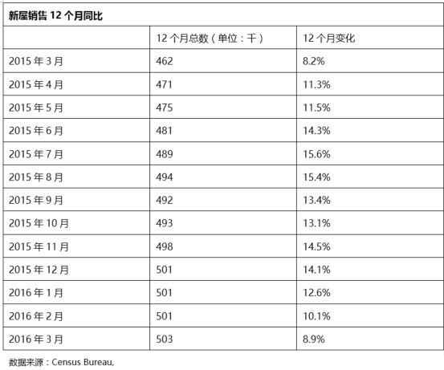
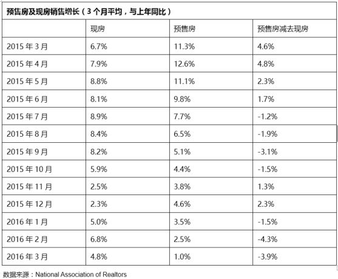
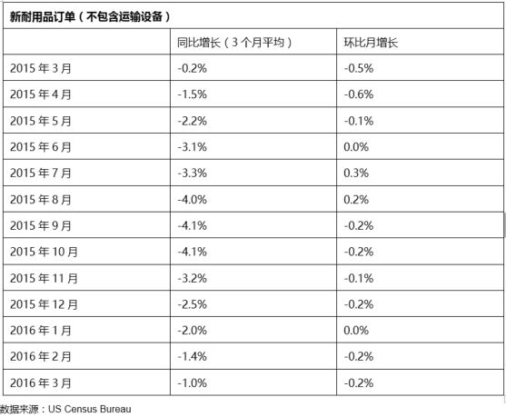

把握美国经济的走向对投资海外的投资者来说成为了一门重要的功课。自“赚洋钱”推出第一期“投资美国”以来，受到了投资者的极大关注。借此，我们进一步推出深度分析美国经济的研究文章，以帮助投资者明辨美国经济未来的走势对于投资的影响。
摘要：
美国经济今年以来一直跌跌撞撞，经济数据喜忧参半。在全球经济的这个时点，投资者几乎都在关注着中国与美国经济改善的蛛丝马迹。现在投资者比较确信的是，中国经济的转型与改善仍然处于艰难时刻，需要给予更多的时间。这样，美国经济的好坏就显得格外重要，尤其是影响全球经济未来走向的美联储利率政策更是取决于美国经济的前景。从这个意义上来说，对一季度美国GDP增长数据的客观解读对于分析与预见美国经济今年的走向尤为重要。
本文试图从构成GDP数据的各个分类入手，找出影响当季GDP数据的构成类别，并展望其未来趋势。同时，也从历史数据的横向与纵向比较分析中获取更为有益的信息以帮助投资者把握未来重要的关注点。
文中，“赚洋钱”团队对美国经济的未来走势给出两个预期：乐观的预期与悲观的预期：
乐观的预期：美国经济将在消费复苏的带领下与就业市场形成良性循环，最终使得年度GDP增长达到2.3%－2.5%的水平并保持温和的通胀。在此情境下，美联储2016年加息1次。
悲观预期：消费复苏遥不可及，最终影响就业市场。通胀随着油价的上涨不断上升，最终突破2.0%水平，引发美联储加息，并且年度加息次数在2-3次。
经济数据的分析与解读具有客观与主观的双重性，经济数据真实反应经济的实体运作，但有时在一定程度上具有随机性。读者需要对所有预测与分析留有容忍误差，这样才能做到在投资风险的把握上掌握一定的度，并选择好最佳的投资时机。
关键词：“同比”与“环比”：
同比 － 与上一年的同季度或月份相比
环比 － 与上一季或月份相比
“赚洋钱”精选与文中提及的行业相关的股票基金：
注：“赚洋钱”精选上述基金并不代表投资推荐，也不表示现在为投资时点。只提供给对上述行业或类别感兴趣的投资者参考！
2016年一季度美国GDP数据概要：
刚公布的美国2016年第一季度GDP数据显示：季度环比增长率为0.5%，同比增长为1.9%。这样的数据很可能把2016年第一季美国GDP增长拖入过去5年中4个最差的年度开端之一。年度同比增长1.9%看起来还不错，但是年度同比增长正在变得缓慢，一些增长的引擎动力正在消失（比如：页岩石油、汽车以及智能手机）。虽然如此，GDP年度增长率的预测仍然维持在2.0%至2.5%，但很可能只能接近范围的下限。
住房数据在GDP报告中看起来还不错，应该能继续帮助到经济。事实上也是第一季度GDP报告中的少数亮点之一。新耐用品订单数据本周继续不温不火，显示制造业基本上还是处于“踩水”状态，并没有真的变好或变坏。
不管怎样，环比0.5%的数值与市场预期基本一致。从历史的角度看，复苏期的平均年度经济增长维持在2.0%至2.5%的水平，只有极少数的年份在过去的50年增长超过3%。听起来非常可怕对吗？但这却是事实！
GDP数据公布后的市场反应
在GDP报告公布后，大多数的股票市场下跌幅度在0.2%至2.0%之间，债券收益率也一样下跌，10期美国国债收益率从1.89%下跌至1.82%。导致这些下跌的是令人失望的美国企业盈利增长以及GDP数据中传出的不佳信息。尽管如此，后者对市场的影响却非常有限，原因也许部分在于先于GDP数据公布前亚特兰大联储已经对数据做出了0.6%的环比预测，非常接近实际值0.5%，并且各分类数据预测也几乎与实际值一致，这多少已经给予市场一定的预期。
糟糕的苹果财务报表以及销售数据理所当然给予科技股打击。但奇怪的是，大宗商品，通常是与股市同步而行的，却享受了一周的盛宴 － 商品、黄金与能源上涨了超过3%，尽管我们没有看到来自于这方面的利好消息。近一周的原油价格上涨帮助了其在4月份价格上升达到20%。这些消息有利于石油公司以及相关设备制造公司，但对消费者来说却未必是件好事。
中央银行一周来再次成为聚焦点。日本央行拒绝再度提供货币宽松政策，美联储试图在本次公开市场操作会议上保持沉默。日本央行的表态被非常有意思地转化成日元兑美元的进一步上升。澳大利亚联储也随后宣布降息，澳元受到了巨大抛压。不幸的是，中央银行越来越艰辛地用宽松的货币政策对抗着人口红利消失的增长压力。同时，随着这么多的国家采取相同的货币政策，政策已经不能再像当初较早采取同样政策的国家那样通过货币贬值带来益处。
GDP数据之谜：环比与同比
先于实际公布的预测、第一季度的GDP数据往往较差以及统计上存在的瑕疵是使得市场保持冷静的原因。同时，今年第一季度与去年第一季度同比仍然保持着合理的1.9%的增速，当然必须承认，如此冰冷的增速放缓必须引起一些谨慎。
环比数据尽管让人担忧，但历史上此类数据的跌宕起伏使人似乎找到了一些理由，尤其是每年的第一季度开局似乎都有些不利。
从2014年的第一个季度开始，环比数据的跳跃已经成为常态。从上述图表中可以看出，参照环比数据的意义不大，因为环比数据波动的范围很大，从-0.9%至4.6%。通常的解释是：经济的真实表现经常会有滞后性。疲弱经济数据显示的上一季度的表现，往往通过经济的滞后作用在下一季度被扭转，尤其是每年的第一季度，不光有恶劣的严寒气候的影响，同时还有比较长的节假日滞后效应。我们需要有一定的耐心等待。
相比环比数据，同比数据才有真实的意义，但同比增幅的不断降缓也确实让人担忧
同比数据的意义更大！在上图中，季度同比数据值的范围从1.7%至2.9%更显得符合逻辑。2014年与2015年的GDP增长都为2.4%，这显示了相对的稳定性。此外，从就业数据增长来看，年同比增长都维持在令人惊讶的2.0%。这表明年度同比比季度环比数据更令人信服。
然而，自从2015年第一季度之后，同比经济增长的数据越来越变得缓慢，并仅仅维持在2.0%的水平附近，而且一直呈现下跌趋势。如果这一趋势得不到扭转，2016年美国经济的增长只可能到达2.0%至2.5%范围的下限。
尽管经济学家的注意力都集中在第一季度GDP的环比数据，我们却更多地担心同比数据的趋势。这一波的经济上升，在6月时将达到6年。虽然没有激情燃烧的增长因子，但也有相对持续的推动动力。低利率敏感行业的大幅上升之外，住房以及汽车消费的上升也起到了推波助澜的作用，这部分上升已经持续多年。
担忧之外我们还是看到，当前的汽车消费数据尽管不佳，但也只是回到了2015年年初的水平，而住房方面的上升还没有看到尽头。这为持续的复苏提供了支持并且还有潜力。
GDP数据的病根究竟在哪里？
探索这一问题，我们更多地需要从GPD数据的构成上来分析。下图是构成GDP数据的分类贡献值。
上述表格中，行业贡献代表的GDP部分是通过各行业增长率与在GDP中的占比相乘而得。从表格中可以看出以下几个明显特征：
第一， 第一季度GDP增长较低已经是个常态。
第二， 把消费类别的两项数据相加，得到1.2%的GDP增长，远高于总体0.5%的GDP增长率。
第三， 公平的来看，住房投资将会持续对增长做出贡献，而这也与消费密切相关。
第四， 政府开支最终对GDP增长做出贡献，但仍然不是一个大数字。
那么，GDP数据看起来是正常的吗？让我们再来看看各分类的具体表现：
两大类（投资与消费物品）数据令人失望
在上述表格中，两大类数据 － 消费物品与非住房投资带来了问题。消费物品多半与汽车消费相关，消费类汽车从GDP中拿去了0.4%的增长。尽管季节性的因素导致了汽车消费的下降，但其确实在缓慢下降。即使在一个汽车消费极其缓慢的市场，汽车消费也不应该从GDP增长中减去数值。温暖的气候减缓了服装与冬季体育用品的消费，给消费物品类带来了负面的压力。
有趣的是，汽车也是商业投资减缓的主要问题来源之一。在将近1.4%的商业投资下跌中，几乎三分之一来源于运输设备。原油设备与建设支出同样给商业投资数据带来负面。如果没有这两项与原油相关的负面因素，商业投资支出可能与前一季度持平。如果再去除汽车行业下跌的影响，整个商业投资支出的数据会非常好看。
进出口数据可能暗藏玄机
有趣的是，市场对于非常难看的进出口数据表现出热情，但这些数据确实非常有害。最后一刻的进口数据的疲软以及大量建立的汽车库存限制了对第一季度GDP数据的进一步伤害。不幸的是，GDP的问题更与基本面相关，包括汽车与原油相关。
新的3月份贸易数据显示了令人惊讶的货物贸易赤字的下跌 － 从2月份的634亿美元下跌至3月份的569亿美元。这是难得一见的单月这么大幅度的下跌，未来可能会被向上修正，或者是非正常的下跌数据。
总体货物贸易环比下跌1.7%，这与预测几乎接近。进口各大分类同时下跌，总体下跌4.3%。消费进口数据是最差的，月环比下跌10%。这么大的进口下跌是因为短期内的库存调整（在目前的经济状况，全世界都有库存的问题！）还是未来的不祥之兆，目前尚无定论，因此需要未来更多个月的数据跟踪。疲弱的美元自然对贸易数据会有所帮助，但在这季度的报告中并没有显现。
新屋与预售房销售数据显示持续偏向新屋市场
新屋销售继续成为亮点。新屋销售数据（仅仅包括单一家庭的数据）推动了住房投资，也成为了近期GDP数据中唯一的亮点。然而，趋势并不完美，增速在减缓。但是，2015年的大幅增速是被2014年寒冷季节对住房建筑增长的负面影响所夸大。
鉴于建筑商的敏感指数高于一年前以及购房人群年龄下移至31至33年龄段，整年的住房增长可以达到10%。虽然3月的数据低于2月份，我们预期大幅的上调会继续。

预售房销售数据（推动现房销售）在3月份也表现完美。110.5百万的销售数据环比与同比均上升1.5%，这表明现房销售会继续按照一个温和的增速上升。

预计，现房销售的增长会回归3%至5%的范围，低于去年的6%增长水平，并低于超出预期的2016年第一季度数据。
耐用品订单与制造业的数据持续恶化：或许预示底部即将到来
在过去的六个月，新订单与工业生产数据的同比下跌开始减缓，我们可能会看到近期将会出现缓慢的增长。不幸的是，每一个月前一个月公布的数据会被向下修正，但是令人难熬的缓慢下跌似乎接近尽头。（新屋市场的情况正好相反，修正数据每个月都是往上方向）。
从8月份之后的环比数据看，连续三个月的平均数都小于零，这表明几乎没有任何环比增长。这使我们不得不保持谨慎。如果这样的状态得不到改变，工业生产增长将停滞在零以下。那么，视线就要转移至ISM制造业指数，来观察是否有更多的提示。ISM制造业指数（在过往的几个月表现出转好的迹象）将为美国制造业的情况提供一些线索。然而，刚公布的4月份的指数将从3月份的51.8下跌至50.8，远不及预测的51.4。一些与汽车相关的问题可能会影响到数据报告（克莱斯勒工厂关闭与日本地震的问题）。汽车销售问题总给ISM报告带来麻烦。但是，令人欣慰使的是，4月份IMS非制造业指数55.7，远高于3月份的54.5，而预测值为54.8。这再次显示，美国经济的扑朔迷离。
当然，市场也会关注中国的PMI数据，最近的PMI数据给市场带来了一些曙光。不良的美国进口数据也带来了市场对中国出口潜力的怀疑。

耐用品订单数已经连续14个月同比下降，目前，耐用品订单数量位于2013年12月以来的最低水平。
汽车库存的数据还是令人担忧的，库存太高使人怀疑如果一旦下降，工业生产与耐用品订单会出现另一波使人失望的数据。众所周知，克莱斯勒关闭了一些工厂，并且另外一些工厂正等待采取行动。另一方面，跨界车与SUV的库存可能太低。受到日本地震带来的供应链上的问题将持续通过数据显现出来，这将进一步“混淆视听”。到目前为止，制造业方面的数据将继续给广泛的经济数据带来压力，尽管不是致命的（原油设备除外）。
针对个人以及企业的新车销售下跌在GDP消费与商业投资两大类的报告中捅出了两个大洞。在前6个月人为的推高数据后，复杂的季节性以及销售日计算已经给过往6个月的汽车销售数据带来了伤害。4月份的报告将包含额外多出的销售日并可能为月度计算带来压力。如果在总销售量上，去年的4月与今年的4月持平，由于去年比今年计算日期少一天，按这样的统计，今年的销售数据很可能下降4%。不过希望犹存，经济学家的预测是4月份汽车年化销售量将达到1750万量，远高于3月份的1650万量。如果是这样的话，这将高于第一季度的最高值，有利于对第二季度GDP数据的贡献。
从正面看，耐用品订单的七大类中的四大类在3月份出现增长：基础材料、运输、机械以及其它。值得一提的是，耐用品订单的总体数值，包含了波音公司的大订单，上升了0.8%。去除运输类，环比耐用品订单下降0.2%。
这一波的复苏受到多个微观趋势的推动并没有一个单一的主题
如果你回顾近期历史上的经济回升，许多人会发现会有一个大家认同的可以看得见的主题。1990年代是互联网热，而2000年代是房地产。相反，这一波复苏却是受一系列更小的趋势推动 － 页岩油气热、波音787的快速启动、汽车消费复苏转向更健康的大型汽车消费以及可能的苹果智能手机（近期业绩报告显示盈利的下降）。这些都是GDP增长缓慢的发酵剂，一点一点为GDP增长做出贡献。现在其中的一些增长出现了问题，是否有其它增长能够取代它们俨然成为一个问题。
我们曾经预见到，缓慢增长的汽车工业恢复到先前1,700万销售量的潜在威胁来自于其对人口增长越来越大的依赖。受到油价下跌的影响，2015年对于利润率更高的大型汽车的需求令人兴奋地上升，但这一势头在一季度得到终止。一季度汽车销售数据给环比GDP中的消费与商业投资数据挖了两个大洞，拿走了将近0.8%。尽管容易引发错误的季节性因素以及过时的商业日期计算也会引发数据的下跌，但在此行业中令人振奋的增长已经不见。
页岩油气热在刚开始的时候并未引起宏观经济学家的过多关注。虽然这并不能在短短的一年推动经济增长，但确实带动了许多行业 － 用于精准开采的计算机行业、用于运输的铁路行业、沙石开采以及钻井材料等。这些受益的行业原本看来会酝酿长期增长，现在却在往相反方向发展。商业结构数据中的油井部分数据在一季度几乎崩溃，导致了商业投资的下跌。开采结构部分的数据在一季度年化的基础上下跌86%。如果排除这些快速的下跌，在办公楼建设、工厂建设方面的投资将会上升，而非在GDP数据中的下跌。
鉴于在此波经济恢复中重要的增长领域的下跌，我们必须现实的估计GDP增长在2.0%至2.5%范围的下限。好消息来自于住房方面消费的持续增长，这能够帮助部分抵消其它领域的弱势。
说说就业数据
令人担忧的GDP季度环比数据以及同比2%的增长却伴随着年同比2%增长的就业数据，这不得不令人生出一丝怀疑：就业数据是否脆弱？因为生产力的提高，就业增长应该保持在至少低于GDP增速的0.25%至0.5%范围，或者说增速应该在1.5%至1.75%的区间。这等同于每月新增非农就业数175,000至205,000个。这与4月份非农就业额200,000的预测相去不远。然而，这仍然低于12个月的平均值234,000。事实上，上周五刚公布的美国4月份非农就业报告显示，4月份新增非农就业16万人，增速创2015年9月以来最低，不及市场预期20万人，前值也从21.5万向下修正为20.8万。4月份失业率为5.0%，差于市场预测的4.9%。与此相反，4月份平均每小时工资环比上升0.3%，同比2.5%。工资上升变成了一把双刃剑：一方面，工资上升有利于消费；另一方面，工资上升提升了用工成本，会给就业带来危害并会导致通胀。
尽管失业率与非农就业数据让我们失望，但仍然只是金融危机的2009年10月时的一半。我们需要更多的月份来观察就业数增长是否处于200,000以下，而非单个月处于此数值之下。非常自然，由于其它经济数据表现不佳，市场把寄托放在了就业数据上，而就业数据往往是非常具有波动性的。因此，过后的几个月，就业数据成为市场走向的关键，如果一再出现不良数据，市场将会出现负面反应。我们已经接近一年中强劲的雇工月份，期待着就业市场传出好消息，但担忧的是，一旦就业市场出现并不如预期，那么整年的就业数据就会受到影响。
几句话的总结：
美国第一季度GDP数据的深度解读帮助我们清晰地认识到，美国经济要在2016年维持较好的经济增长，摆脱衰退危机，唯一的出路是提升消费以改善投资。尽管美国经济有些步履维艰，但消费领域的潜力仍然可以挖掘，尤其是房地产消费方面。对此，我们给出两个预期：乐观的预期与悲观的预期。
乐观的预期：美国经济将在消费复苏的带领下与就业市场形成良性循环，最终使得年度GDP增长达到2.3%－2.5%的水平并保持温和的通胀。在此情境下，美联储2016年加息1次。
悲观预期：消费复苏遥不可及，最终影响就业市场。通胀随着油价的上涨不断上升，最终突破2.0%水平，引发美联储加息，并且年度加息次数在2-3次。
注：本文数据来自于MorningStar。本分析仅供投资者参考，并不构成投资建议。


{kind=link}
{kind=link}
{kind=link}
{kind=link}
{kind=link}
{kind=link}